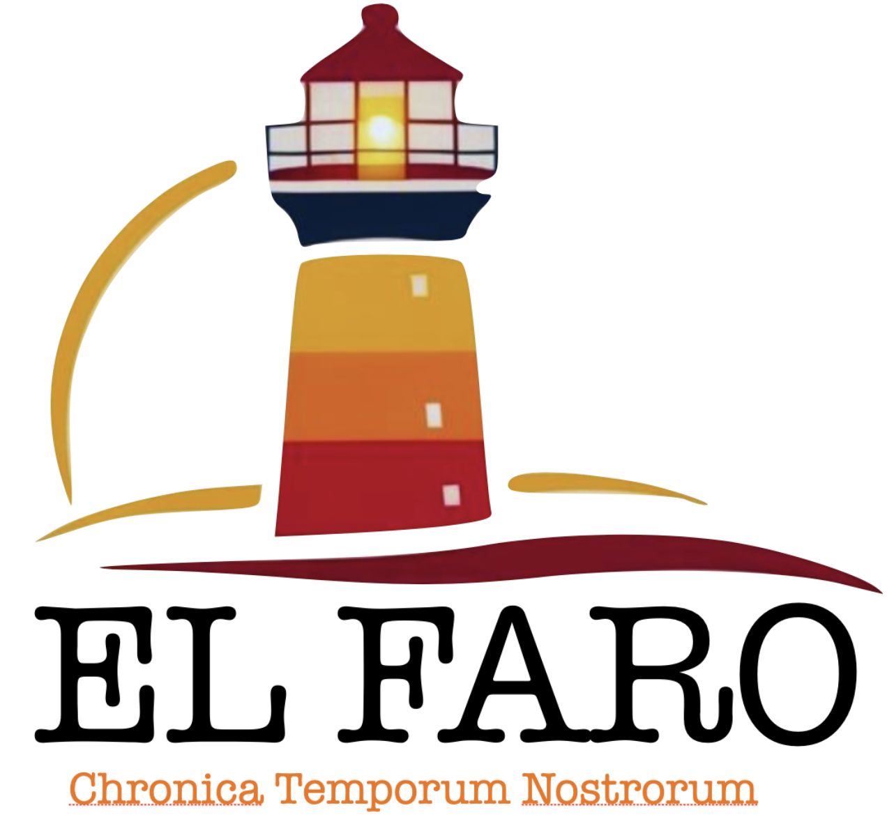

Diario El FaroEsta página está hecha solo con HTML.

Valparaíso, 28 de marzo de 2025 — Esta mañana fue inaugurado el nuevo Mirador Viento del Puerto, una estructura ecológica ubicada en el tradicional Cerro Alegre que promete convertirse en uno de los principales atractivos turísticos del puerto. Construido con materiales reciclados y energías renovables, el mirador ofrece una vista de 360 grados del anfiteatro natural de Valparaíso, desde el mar hasta los cerros más altos. La obra fue impulsada por la Municipalidad junto con organizaciones vecinales y el financiamiento de un fondo de desarrollo urbano sostenible. “El mirador es un símbolo de lo que queremos para Valparaíso: una ciudad que avanza cuidando su patrimonio y su entorno”, señaló la alcaldesa Mariana Díaz durante la ceremonia de apertura, que contó con presentaciones musicales y degustaciones de productos locales. El acceso al mirador es gratuito y estará abierto todos los días de 9:00 a 21:00 horas. Además, se informó que el lugar contará con visitas guiadas para turistas y actividades culturales los fines de semana. Con esta nueva atracción, Valparaíso busca consolidarse como destino turístico sustentable en la región y continuar revitalizando sus espacios patrimoniales con participación ciudadana.
Valparaíso, 28 de marzo de 2025 — Este sábado, las calles del plan de Valparaíso se llenarán de color y música con el primer Festival Nocturno de Arte Callejero, una iniciativa que reunirá a muralistas, músicos, malabaristas y poetas urbanos desde las 18:00 hasta la medianoche. El evento busca revitalizar el centro porteño y dar espacio a artistas locales. La entrada es gratuita y se espera una alta participación ciudadana.
Valparaíso, 28 de marzo de 2025 — Un extraño audio grabado por un residente del cerro Barón ha generado curiosidad e inquietud entre los vecinos del sector. El sonido, que fue registrado durante la madrugada del martes, consiste en una secuencia de tonos graves y pulsos rítmicos que, según algunos, “no parecen humanos”. El archivo fue compartido en redes sociales y rápidamente se volvió viral, atrayendo incluso a aficionados a lo paranormal. Sin embargo, expertos del Departamento de Acústica de la Universidad Técnica Federico Santa María señalan que podría tratarse de “vibraciones mecánicas amplificadas por la estructura del cerro y el eco urbano”. Las autoridades locales descartaron cualquier situación de peligro, pero seguirán monitoreando la zona para esclarecer el origen del audio. Mientras tanto, varios curiosos ya se han acercado al cerro en busca de más pistas.
Puedes escribirme a: juan@ejemplo.com